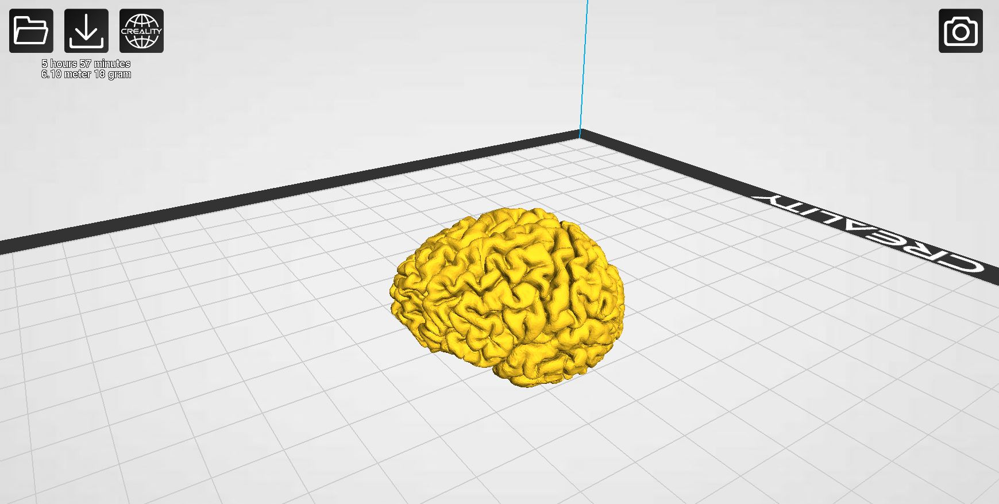

3D-printed brains : a reward for participants
An innovative way to thank our participants and get back to 3D printing
First idea and implementation
This side project was born from a suggestion from my colleague Tommaso Pavan during a discussion about processing our MRI data. We were using Freesurfer to segment certain parts of the brain, but my colleague had also found a way to extract the brain surface using Fastsurfer, a faster alternative using AI. We then added a conversion to STL format to enable 3D printing. I tested the process using my own scan at 1/4 scale and found that the pipeline was quick and efficient, taking less than two days after the MRI scan.
From Digital to Physical: the STL model
The 3D printed brain
Join the project
Are you interested in having your own brain printed in 3D? We are now offering this unique opportunity to participants in our study. Not only will you be contributing to cutting-edge medical research, but you will also receive a tangible and one-of-a-kind representation of your own brain. Contact us to learn more and join us in shaping the future of medical imaging!